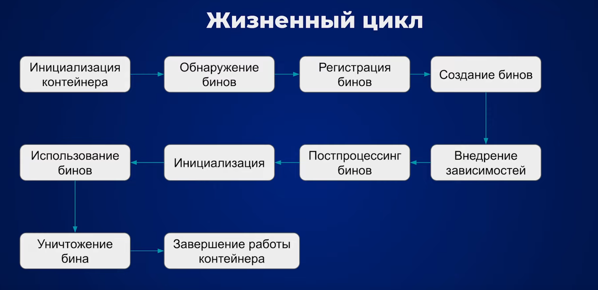

Жизненный цикл Bean в Spring :
- Инициализация контейнера. При запуске приложения Spring контейнер создаёт экземпляры всех бинов(BeanDefinition), определённых в конфигурации.
- Создание бина. Контейнер вызывает его конструктор или фабричный метод для создания экземпляра бина.
- Внедрение зависимостей. После создания бина контейнер внедряет зависимости, указанные в конфигурации.
- Настройка бина. После внедрения зависимостей контейнер вызывает методы инициализации бина.
- Использование бина. После настройки бина он готов к использованию в приложении.
- Уничтожение бина. Когда контекст приложения закрывается или бин больше не нужен, контейнер вызывает методы уничтожения бина. (только для singleton)